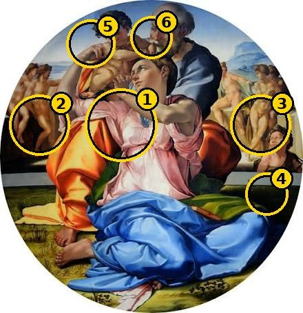

Hidden in the Frame · Uffizi Gallery, Florence
Doni Tondo
Michelangelo · c. 1505–07 · Oil and tempera on panel, round · Room 35–38

The story
The wealthy merchant Agnolo Doni commissioned this round painting for his marriage to Maddalena Strozzi, probably as a wish for children. It is Michelangelo's only panel painting that is certainly finished. When Doni wanted to pay less than agreed, Michelangelo demanded double – and Doni paid.
Details to look for
- Mary has arms like an athlete and twists in a complicated spiral. Michelangelo was a sculptor and painted her like a statue. A closed book lies on her lap – she has just been reading and now turns to the child.
- Behind the wall stand naked young men, unconnected to the Holy Family. They stand for the world before God's law, pagan antiquity.
- On the right side too: the old world, separated by a wall. In front the new, Christian world, behind the one that has passed.
- Little John the Baptist looks up from below. He stands between the worlds: the last of the old prophets and the first to recognise Jesus.
- The child is passed over Mary's shoulder – is she taking him or handing him on? That stays open. He sits almost on her head: Christ above all.
- Joseph, the old man, holds Mary and the child from behind. He stands for the time of the Old Testament, on which the new time is built.
What it says
Three ages in one painting: before the law (the nudes), under the law (Joseph) and the age of grace (Christ). The colours already glow as they will later in the Sistine Chapel.
Open the full guide – zoom, audio guide, German & Japanese →